(23) gaussian: (16, 4.0)#
project = iP-VAE, host = chewie, device = cuda:1
Motivation:
device_idx = 1
device = f'cuda:{device_idx}'
print(f"device: {device} ——— host: {os.uname().nodename}")
device: cuda:1 ——— host: chewie
Trainer#
model_type = 'gaussian'
cfg_vae, cfg_tr = default_configs(model_type, 'vH16', 'grad|lin')
cfg_vae['seq_len'] = 16
cfg_tr['kl_beta'] = 4.0
cfg_vae['track_stats'] = True
tr = Trainer(
model=MODEL_CLASSES[model_type](CFG_CLASSES[model_type](**cfg_vae)),
cfg=ConfigTrain(**cfg_tr),
device=device,
)
tr.model.print()
print(f"{tr.model.cfg.name()}\n{tr.cfg.name()}_({tr.model.timestamp})\n")
tr.show_schedules()
+-------------+------------+ | Module Name | Num Params | +-------------+------------+ | IGVAE | 132.9 K | | ——— | ——— | | layer | 132.9 K | +-------------+------------+
gaussian_vH16_t-16_z-[512]_cl-5,5_<grad|lin> b200-ep300-lr(0.002)_beta(4:0.1)_gr(500)_(2025_02_23,22:29)
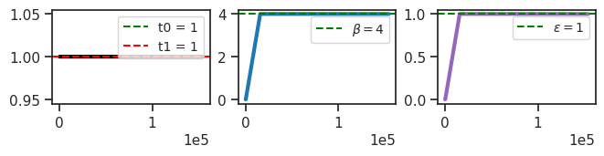
print(tr.model.layer)
# print(tr.model.layer.n_exp)
GaussianLayer(input_dim=256, latent_dim=512, temperature=1, beta_inner=1, eps=1)
tuple(llr.exp() for llr in tr.model.layer.log_lr)
(tensor([1.], device='cuda:1', grad_fn=<ExpBackward0>),
tensor([1.], device='cuda:1', grad_fn=<ExpBackward0>))
tr.train()
epoch # 300, avg loss: 182.366207: 100%|████| 300/300 [1:54:21<00:00, 22.87s/it]
tuple(llr.exp() for llr in tr.model.layer.log_lr)
(tensor([0.5163], device='cuda:1', grad_fn=<ExpBackward0>),
tensor([0.0955], device='cuda:1', grad_fn=<ExpBackward0>))
u0 = tonp(tr.model.layer.u_init[0].squeeze())
u1 = tonp(tr.model.layer.u_init[1].squeeze())
tr.model.show(order=np.argsort(u1));
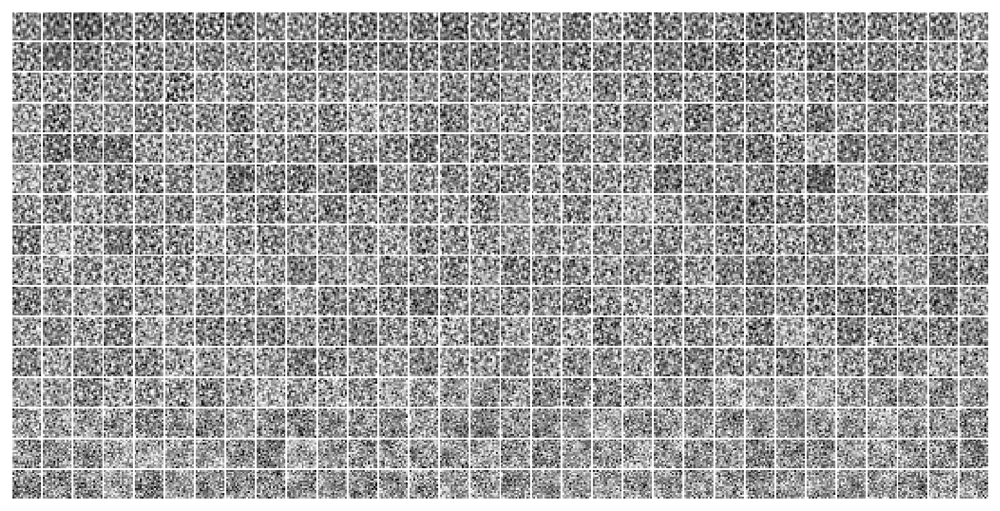
w = tr.model.layer.get_weight().data
w = tonp(w.T.reshape(-1, 16, 16))
w.shape
(512, 16, 16)
histplot(w.ravel())
plt.show()
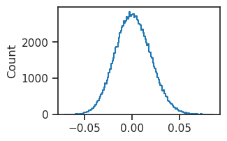
histplot(u0, color='dimgrey');
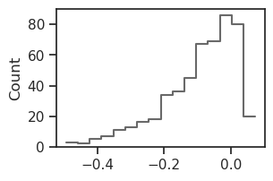
bias = tonp(tr.model.layer.log_bias.squeeze().exp())
bias
array([0.02506618, 0.02500761, 0.02514626, 0.02507033, 0.02488052,
0.02509142, 0.02504865, 0.02538661, 0.02525067, 0.02505319,
0.02514903, 0.02489357, 0.02523898, 0.02515617, 0.02512224,
0.02502369, 0.02495053, 0.02509527, 0.02501618, 0.02531339,
0.02510857, 0.02517442, 0.0251133 , 0.02514887, 0.0250963 ,
0.02625587, 0.02488073, 0.22862847, 0.02513671, 0.02506603,
0.02506411, 0.02515438, 0.02507646, 0.02500855, 0.02579075,
0.02507574, 0.02507578, 0.02506789, 0.02502758, 0.0249915 ,
0.02518807, 0.02561336, 0.02497623, 0.0251936 , 0.02505549,
0.02510296, 0.02581703, 0.02504776, 0.02509655, 0.02504466,
0.02509864, 0.025272 , 0.02504479, 0.02506308, 0.0251218 ,
0.02503433, 0.02513598, 0.02518508, 0.02510638, 0.02509185,
0.02515434, 0.02527254, 0.0249358 , 0.02521986, 0.02520464,
0.02521791, 0.02503463, 0.02506564, 0.02514607, 0.02525712,
0.024993 , 0.0249417 , 0.02520422, 0.02493895, 0.02551681,
0.02510736, 0.02525093, 0.02553689, 0.02522002, 0.02518294,
0.02502996, 0.02511827, 0.0253739 , 0.0252448 , 0.02590526,
0.02498339, 0.02504566, 0.02510571, 0.02537008, 0.02505031,
0.02517824, 0.02489942, 0.02513925, 0.02537232, 0.02528705,
0.02518827, 0.02518354, 0.02518156, 0.02504611, 0.02520226,
0.02501175, 0.02506831, 0.024842 , 0.02518614, 0.02505383,
0.02525443, 0.02506305, 0.02539394, 0.02499789, 0.025243 ,
0.02511708, 0.02514691, 0.02497767, 0.02507508, 0.0250384 ,
0.02517504, 0.02514291, 0.02517917, 0.02505212, 0.02567773,
0.02506764, 0.02485561, 0.02495876, 0.02496207, 0.02515658,
0.02509395, 0.57712626, 0.02510694, 0.02503089, 0.02529778,
0.02509246, 0.02502067, 0.02504858, 0.02553451, 0.02508906,
0.02504748, 0.02528209, 0.02515929, 0.02519716, 0.02519267,
0.02520367, 0.02509199, 0.02493347, 0.02509193, 0.02510896,
0.02515302, 0.02511885, 0.02508525, 0.02568552, 0.02511897,
0.02511931, 0.02542632, 0.02516328, 0.02536269, 0.02500648,
0.02493511, 0.02537625, 0.02629003, 0.02495351, 0.02518693,
0.02502376, 0.02513545, 0.02527593, 0.02505058, 0.02504961,
0.02497534, 0.02514675, 0.02520585, 0.02509086, 0.02505525,
0.02501989, 0.02518954, 0.02626192, 0.02514303, 0.02492764,
0.02554374, 0.0250902 , 0.0250742 , 0.02524032, 0.02545477,
0.02549997, 0.02508984, 0.02588028, 0.02501385, 0.02506219,
0.02518375, 0.02487288, 0.02503561, 0.02532873, 0.02514747,
0.02508947, 0.02537681, 0.02492861, 0.02521091, 0.02497917,
0.02521606, 0.0251363 , 0.02507273, 0.02502722, 0.02496393,
0.02503021, 0.02563199, 0.02496194, 0.02495223, 0.02510535,
0.02499133, 0.02496612, 0.0251711 , 0.02488093, 0.02504154,
0.02512429, 0.02585575, 0.02499892, 0.02507896, 0.02515176,
0.02579451, 0.02499454, 0.02503344, 0.0250826 , 0.02500511,
0.02499283, 0.02502697, 0.0249885 , 0.02500452, 0.02519221,
0.02488981, 0.0249226 , 0.02504714, 0.02524702, 0.02514422,
0.02507906, 0.02496946, 0.02508431, 0.02507517, 0.02535136,
0.02505177, 0.02530905, 0.02517254, 0.02506772, 0.0251678 ,
0.02518187, 0.02518175, 0.0250541 , 0.02493191, 0.02549062,
0.02513041, 0.02511537, 0.02506391, 0.02522227, 0.02502056,
0.02504613, 0.02521167, 0.02505072, 0.02492843, 0.02521099,
0.02518821, 0.02503048, 0.02519177, 0.02497093, 0.02523175,
0.02652819, 0.02502857, 0.02503639, 0.02511359, 0.02522884,
0.02494987, 0.02506729, 0.02502562, 0.02520553, 0.02504822,
0.02509091, 0.024959 , 0.02501068, 0.02495095, 0.02499357,
0.02490718, 0.02531504, 0.02520235, 0.0250837 , 0.02503427,
0.02533173, 0.02494344, 0.02527726, 0.02546394, 0.02497194,
0.02506141, 0.02516708, 0.02484732, 0.02531583, 0.02500605,
0.02502225, 0.02504686, 0.02518869, 0.02501414, 0.02509726,
0.02531842, 0.0249808 , 0.02514687, 0.02507206, 0.02518232,
0.02506735, 0.02511644, 0.02503286, 0.02552107, 0.02505926,
0.02532596, 0.02516732, 0.02518351, 0.02506938, 0.0251619 ,
0.02505542, 0.02521551, 0.0253276 , 0.02653234, 0.02516759,
0.02521391, 0.0251234 , 0.025227 , 0.02509706, 0.025108 ,
0.02497615, 0.02578918, 0.02511775, 0.02511765, 0.02502336,
0.02503957, 0.02544196, 0.025084 , 0.02524938, 0.02526329,
0.02480824, 0.02548486, 0.02534364, 0.02511434, 0.02524265,
0.02514439, 0.02520889, 0.02496804, 0.02505818, 0.0250186 ,
0.02504342, 0.02502806, 0.025199 , 0.02511651, 0.0249359 ,
0.02510831, 0.02508873, 0.02490425, 0.02527286, 0.02510025,
0.02521124, 0.02621425, 0.02512157, 0.0256287 , 0.02505187,
0.02513249, 0.02497226, 0.02570522, 0.02502831, 0.02516921,
0.02509301, 0.02520952, 0.02506219, 0.02511502, 0.02504163,
0.02512521, 0.02512138, 0.02513818, 0.02491094, 0.02517366,
0.02516466, 0.02536929, 0.02532174, 0.02534151, 0.02534904,
0.0252949 , 0.02515793, 0.02617952, 0.0250196 , 0.02498165,
0.02508909, 0.02510041, 0.02524017, 0.02516741, 0.02563625,
0.02532449, 0.02486203, 0.02611812, 0.02509166, 0.02515731,
0.02626452, 0.0251416 , 0.02510501, 0.02519928, 0.02503821,
0.02489551, 0.02510362, 0.02536369, 0.02619167, 0.02510123,
0.02510671, 0.02498734, 0.02511318, 0.02594529, 0.02508604,
0.02506437, 0.02515696, 0.02508492, 0.02527298, 0.02504448,
0.02508362, 0.02497866, 0.02493871, 0.02530269, 0.0250709 ,
0.02508912, 0.02517135, 0.02497041, 0.0250478 , 0.02513219,
0.02514522, 0.02590336, 0.02529149, 0.02499083, 0.02544631,
0.02518839, 0.02505325, 0.02497744, 0.02577361, 0.02500968,
0.02508071, 0.0251898 , 0.02559029, 0.02532787, 0.02519754,
0.02517894, 0.02529128, 0.0251631 , 0.02510788, 0.02661173,
0.02536553, 0.0250328 , 0.02512707, 0.02527033, 0.02501163,
0.02497111, 0.02502514, 0.0251464 , 0.02517306, 0.02510922,
0.02499726, 0.02514466, 0.02511908, 0.02510223, 0.02516038,
0.02496898, 0.02509268, 0.02526056, 0.02510833, 0.02517324,
0.02505889, 0.0251708 , 0.02513148, 0.02507279, 0.02486197,
0.02521349, 0.02514353, 0.02506109, 0.02508042, 0.0251321 ,
0.02516071, 0.02513451, 0.02484795, 0.02500097, 0.02531843,
0.02500496, 0.02512237, 0.02508305, 0.0251853 , 0.02512537,
0.02506251, 0.02515502, 0.02506994, 0.02511714, 0.02517412,
0.02536841, 0.0251608 , 0.02493595, 0.02519022, 0.02510337,
0.02526906, 0.02522084, 0.02502409, 0.02508915, 0.02504308,
0.02498043, 0.0253399 , 0.02518287, 0.02499962, 0.02504584,
0.02513906, 0.0254178 , 0.02517454, 0.02504444, 0.02505554,
0.02524785, 0.02500887, 0.02501821, 0.02499373, 0.02493569,
0.02509977, 0.02515365], dtype=float32)
fig, ax = create_figure()
sns.histplot(bias, label='bias', stat='percent', ax=ax)
ax.legend()
plt.show()
log_scale = tonp(tr.model.layer.log_sigma_dec.squeeze())
histplot(np.exp(log_scale) ** 2, label='dec var')
plt.legend()
plt.show()
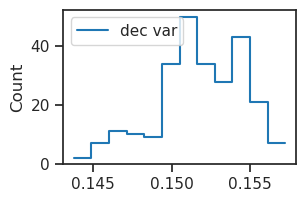
var = np.exp(log_scale) ** 2
var = var.reshape(16, 16)
var_data = tr.dl_vld.dataset.tensors[0].var(dim=0).squeeze()
fig, ax = create_figure()
imshow(var, cmap='Greys_r')
plt.colorbar()
plt.show()
fig, ax = create_figure()
imshow(var_data, cmap='Greys_r')
plt.colorbar()
plt.show()
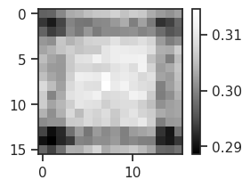

%%time
kws = dict(
seq_total=10000,
seq_batch_sz=1000,
n_data_batches=2,
)
results = tr.analysis('vld', **kws)
_ = plot_convergence(results, color='k')
100%|███████████████████████████████████| 2/2 [00:31<00:00, 15.82s/it]
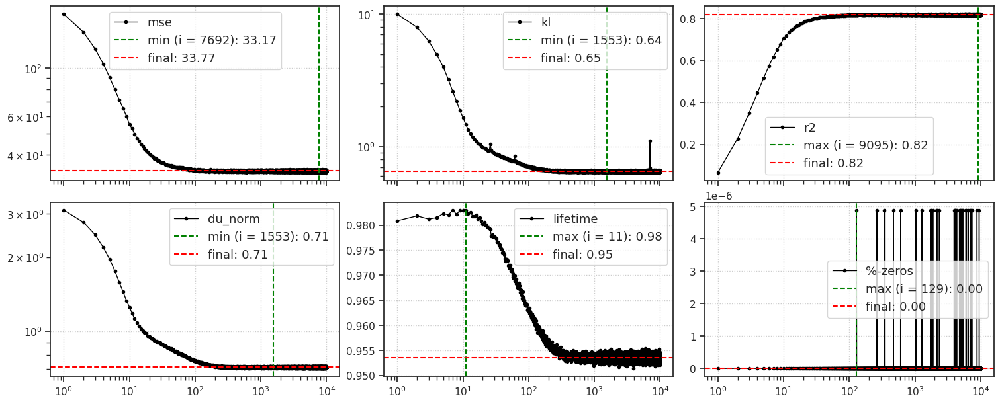
CPU times: user 40.7 s, sys: 1.81 s, total: 42.5 s
Wall time: 42.5 s
### Was: beta = 20.0
100%|███████████████████████████████████| 2/2 [00:41<00:00, 20.82s/it]
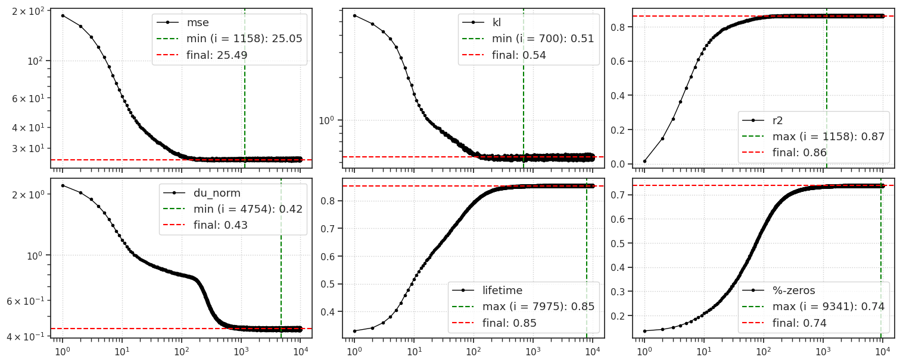
CPU times: user 50 s, sys: 2.79 s, total: 52.8 s
Wall time: 52.8 s
output#
output = tr.model.xtract_ftr(
feeder=tr.get_feeder(),
seq=range(1000),
return_extras=True,
).stack()
u_norm = tonp(torch.linalg.norm(output['u'], axis=-1).mean(0))
v_norm = tonp(torch.linalg.norm(output['v'], axis=-1).mean(0))
r_norm = tonp(torch.linalg.norm(torch.exp(output['u']), axis=-1).mean(0))
fig, axes = create_figure(1, 3)
axes[0].plot(u_norm, label='u', color='r')
axes[1].plot(v_norm, label='v', color='k')
axes[2].plot(r_norm, label='r')
add_legend(axes)
plt.show()
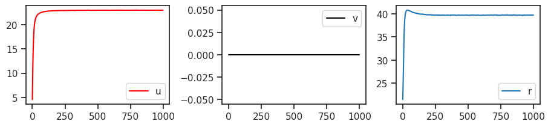
### Was: beta = 20.0
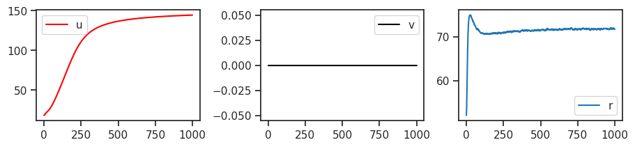
feeder = tr.get_feeder()
locs = torch.stack([
p.loc for p in
output['conditional'].values()
], dim=1)
samples = torch.stack([
p.sample() for p in
output['conditional'].values()
], dim=1)
mse_locs = (locs - feeder[0].unsqueeze(1)).pow(2).sum(-1)
mse_samples = (samples - feeder[0].unsqueeze(1)).pow(2).sum(-1)
fig, ax = create_figure()
ax.plot(tonp(mse_locs.mean(0)), color='k', label='mean')
ax.plot(tonp(mse_samples.mean(0)), color='tomato', label='sample')
ax.set_yscale('log')
add_legend(ax)
plt.show()
mse_locs.mean(0)[-5:], mse_samples.mean(0)[-5:]
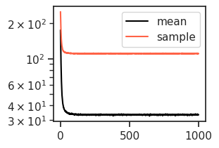
(tensor([33.2694, 33.3789, 33.4355, 33.3928, 33.2773], device='cuda:1'),
tensor([110.8249, 110.8921, 110.5431, 110.6891, 110.5299], device='cuda:1'))
num = 20
n_timepoints = 40
x2p = tonp(locs)[:num]
x2p = x2p[:, :n_timepoints]
true = tonp(feeder[0][:num].unsqueeze(1))
x2p = np.concatenate([x2p, np_nans(true.shape), true], axis=1)
x2p = x2p.reshape(tr.model.cfg.shape)
x2p = x2p.squeeze()
_ = plot_weights(x2p, nrows=num)
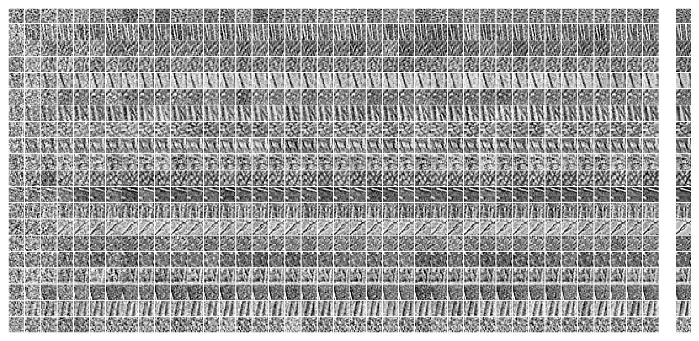
x2p = tonp(samples)[:num]
x2p = x2p[:, :n_timepoints]
true = tonp(feeder[0][:num].unsqueeze(1))
x2p = np.concatenate([x2p, np_nans(true.shape), true], axis=1)
x2p = x2p.reshape(tr.model.cfg.shape)
x2p = x2p.squeeze()
_ = plot_weights(x2p, nrows=num)
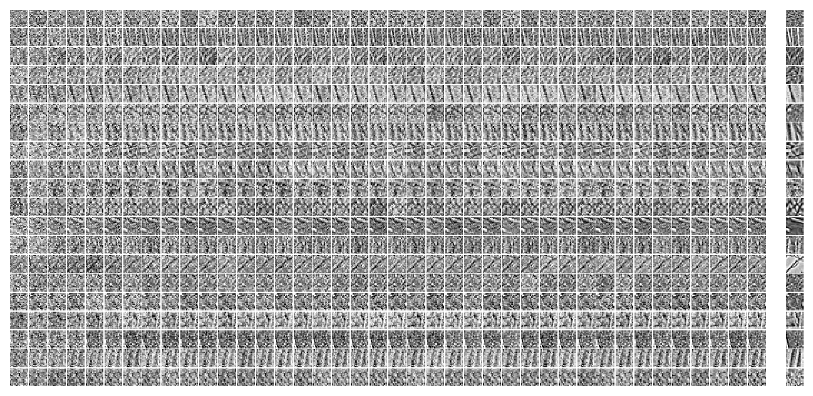